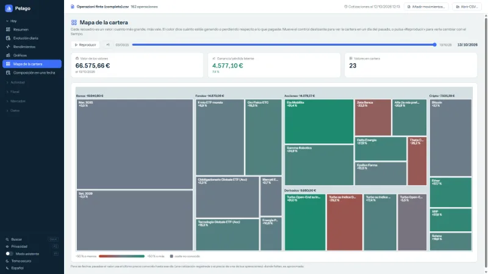
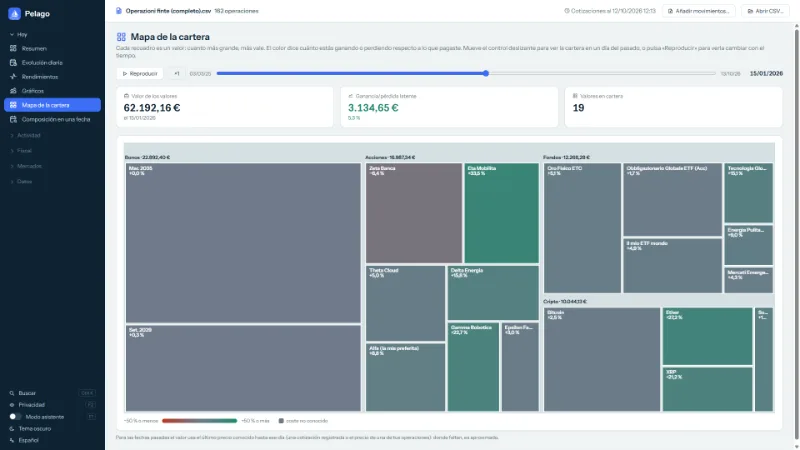
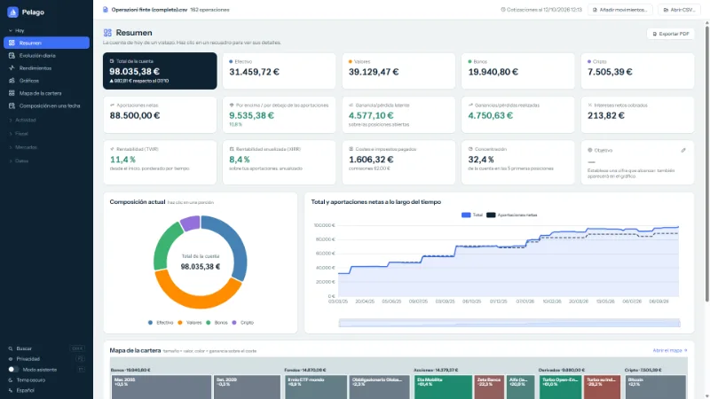
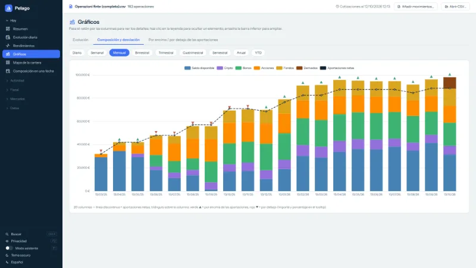
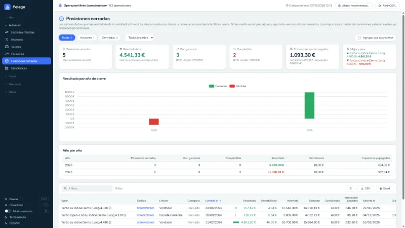
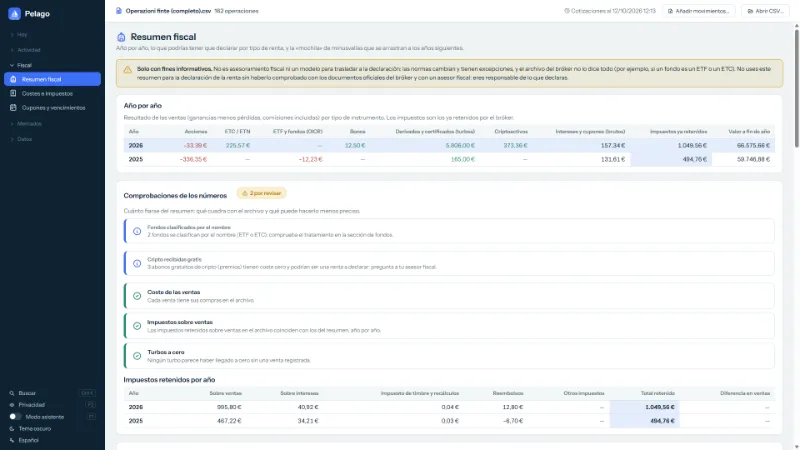
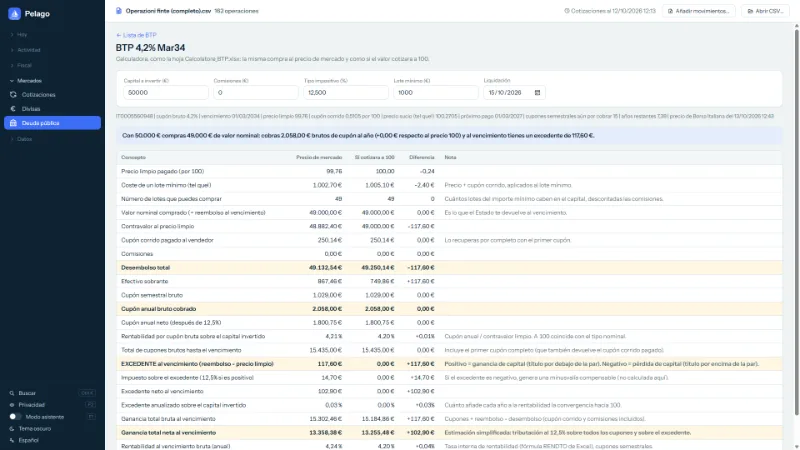
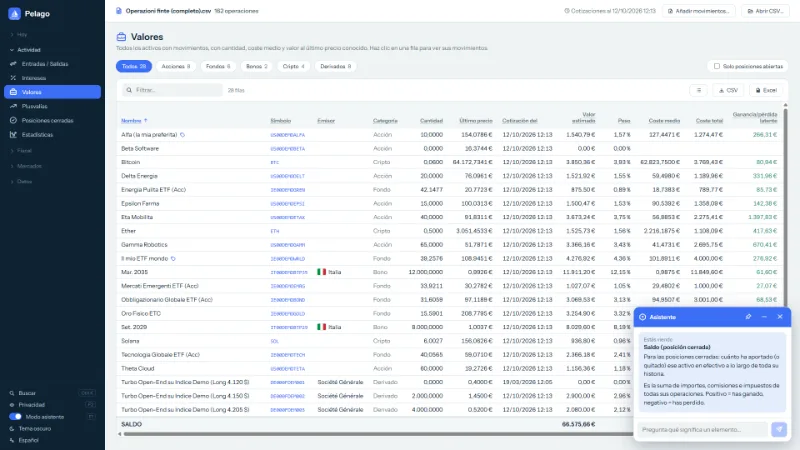
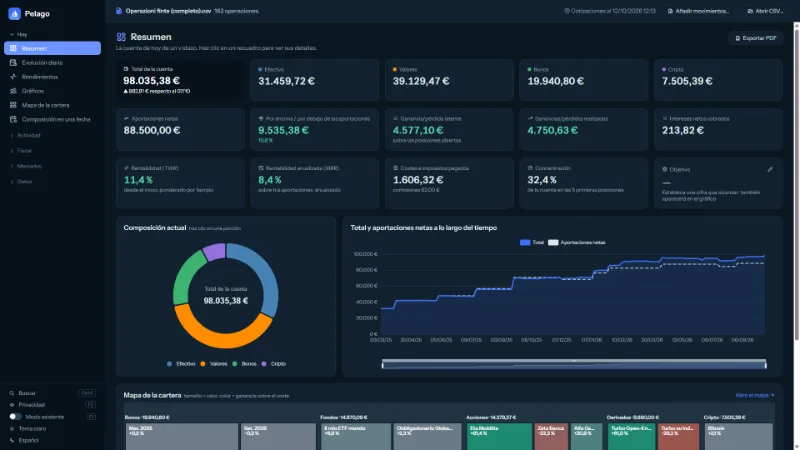

¿Cómo ha cambiado tu cartera con el tiempo?
El archivo CSV de Trade Republic no lo dice. Pelago sí: un mapa de recuadros de colores de tu cartera, con un control deslizante para volver a cualquier día del pasado.
Gratis, sin publicidad, software libre. Todo se queda en tu PC.
Qué hace
Un solo archivo CSV, muchas formas de leerlo. Las capturas muestran una cuenta de ejemplo con datos inventados.
-

Mapa de la cartera
Un recuadro por valor: cuanto más grande, más vale; el color indica si ganas o pierdes respecto al coste.
-

Control del tiempo
Elige un día del pasado, o pulsa «Reproducir» y mira cómo los valores aparecen, crecen y desaparecen.
-

Resumen
Total, categorías, aportaciones, rentabilidad y costes de la cuenta, de un vistazo.
-

Gráficos
Qué había en la cuenta, mes a mes, y si estabas por encima o por debajo de tus aportaciones.
-

Posiciones cerradas
Cuánto has ganado o perdido con cada valor vendido, neto de comisiones e impuestos ya retenidos.
-

Resumen fiscal
Un resumen informativo, año por año. Son estimaciones: no sustituyen los documentos del bróker ni a un asesor fiscal.
-

BTP y deuda pública
Para Italia, la lista de BTP de tipo fijo: elige uno y calcula cuántos compras, los cupones y el excedente al vencimiento.
-

Modo asistente
Pasa el ratón por una columna o un número: Pelago explica qué es y cómo se calcula.
-

Cinco idiomas, tema claro y oscuro
Italiano, inglés, francés, alemán y español. Tu CSV nunca se modifica; la copia de seguridad local está a un clic.


¿Anacrónico? Sí, a propósito.
Sí, es un programa para Windows. En 2026 parece una decisión de otra época, y en cierto modo lo es: pero no por nostalgia. Es la forma más sencilla de mantener tus datos donde deben estar.
Nadie guarda tus datos, porque no hay nadie a quien dárselos.
Sin servidor, sin cuenta, sin «nube»: tu CSV se queda en tu disco, donde lo guardaste.
El archivo que descargas es siempre el mismo, y puedes comprobarlo.
Una página web puede cambiar en cada visita sin que lo sepas.
pelago.exetiene una huella SHA-256 pública y el código es abierto: lo que has comprobado es lo que se ejecuta, también dentro de un año, también sin internet.Los precios los pide tu PC, no un intermediario.
Muchos servicios de precios no aceptan peticiones desde páginas web (Borsa Italiana, por ejemplo): un sitio tendría que pasar por un servidor propio, que vería qué valores posees. El programa los pide directamente desde tu casa y envía solo códigos de valores y fechas.
Funciona también sin nosotros.
Sin suscripción, sin ningún servicio que pueda apagarse: si mañana desapareciera el sitio, el programa y tus datos seguirían ahí.
El precio de la elección
Solo funciona en Windows, tienes que descargar un archivo (por eso existe la verificación), Windows muestra un aviso mientras el archivo no esté firmado y las actualizaciones son manuales. Para probarlo sin descargar nada está la demo en el navegador, con datos inventados.
Cómo se usa
Descarga el CSV
Desde tu cuenta de Trade Republic, exporta el archivo CSV de las transacciones.
Descarga Pelago
Coge
pelago.exede la última versión y ejecútalo: es un único archivo, sin instalación.Abre el CSV
Pulsa «Abrir CSV…» y elige el archivo. Tu CSV nunca se modifica.
Hace falta Windows 10 u 11 de 64 bits y el WebView2 Runtime, que ya viene con Windows 11 y con la mayoría de los Windows 10 actualizados.
¿Quieres probarla sin tus datos?
Inicia Pelago sin abrir ningún archivo y pulsa «Probar con una cuenta de ejemplo»: se abre una segunda ventana con una cuenta inventada (unas 160 operaciones), en una carpeta temporal que desaparece al cerrarla. Si prefieres, descarga el CSV de ejemplo y ábrelo con «Abrir CSV…».
Qué sale de tu PC
- Tu CSV y tus datos se quedan en el PC. Pelago nunca pide usuario ni contraseña y no se conecta a tu cuenta.
- Para los precios consulta servicios públicos (Yahoo Finance, CoinGecko, BCE, Borsa Italiana y alguno más) y envía solo códigos de valores y fechas: nunca importes, cantidades ni datos personales.
- Los precios de los derivados (Vontobel y Société Générale) están desactivados por defecto: los activas tú, desde la página Cotizaciones.
- El código es público: puedes comprobar tú mismo que no hay nada más.
Compruébalo tú mismo
- El código es público (GPL-3.0): puedes leerlo, compilarlo tú mismo y ver qué hace.
-
Cada versión indica la huella SHA-256 de
pelago.exe. Tras la descarga, en PowerShell:Get-FileHash .\pelago.exe -Algorithm SHA256Compara el resultado con el archivo
pelago.exe.sha256de la misma versión. - El ejecutable no está firmado digitalmente: la primera vez, Windows puede mostrar el aviso de SmartScreen («Windows protegió el equipo»). No lo ocultamos: si lo prefieres, compila Pelago desde el código fuente.
Preguntas frecuentes
¿Pelago es oficial o está vinculada a Trade Republic?
No. Es un proyecto personal y no oficial: no está afiliada a Trade Republic ni aprobada por ella, y no tiene ningún acceso a tu cuenta.
¿Por qué no es un sitio web?
Porque así tus datos se quedan en tu PC y el programa que has comprobado es siempre el mismo. El razonamiento completo está aquí.
¿Puedo probarla sin descargar nada?
Sí: la demo en el navegador usa una cuenta con datos inventados y no hace ninguna petición a internet.
¿Cuánto cuesta?
Nada. Es gratuita, sin publicidad y sin ánimo de lucro: software libre (GPL-3.0).
¿Los números son exactos?
Son estimaciones calculadas a partir del archivo: no son un saldo oficial. Los precios proceden de servicios públicos y pueden llegar con retraso o faltar.
¿Puedo usarla para la declaración de la renta?
No como única fuente. Los resúmenes fiscales son estimaciones informativas, con fórmulas simplificadas: compruébalos con los documentos oficiales de tu bróker y con un asesor fiscal. Eres responsable de lo que declaras.
¿Funciona con otros brókeres, o en Mac y Linux?
Está pensada para el CSV de Trade Republic: no hay ninguna garantía con archivos de otros brókeres. Por ahora solo funciona en Windows 10/11 de 64 bits.
¿Cómo la desinstalo?
Borra pelago.exe: no escribe en el registro ni se inicia con el ordenador. Para quitar también los datos, borra la carpeta %LOCALAPPDATA%\Pelago y, si los activaste, las copias de seguridad en Documentos\Pelago backup.
He encontrado un error o tengo una idea: ¿cómo lo comunico?
Abre una incidencia en GitHub o escribe a pelago_claude@gmail.com. No adjuntes nunca tu CSV real: contiene todas tus operaciones.
Advertencias y responsabilidad
Pelago calcula valores, rendimientos y resúmenes fiscales a partir del archivo CSV que le das, con fórmulas simplificadas: son estimaciones, pueden contener errores o no tener en cuenta todos los casos (formatos distintos, operaciones societarias, régimen fiscal, impuestos extranjeros). No son un saldo oficial ni asesoramiento financiero, jurídico o fiscal, y no sustituyen los documentos oficiales de tu bróker ni a un profesional: comprueba siempre los números antes de usarlos, en particular para la declaración de la renta. Pelago se ofrece «tal cual», sin garantías de ningún tipo (GPL-3.0, arts. 15-16): en los límites permitidos por la ley, el autor no responde de los daños derivados del uso del programa o de sus resultados.